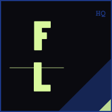
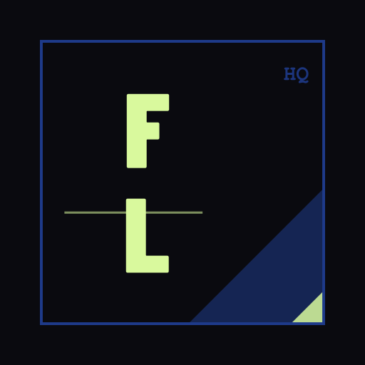

FieldLogicHQ — Brand Identity System
Two-mark system · Primary (FL) + Icon (chevron) · 2026-05-27
Two-mark system
Size-based usage rules
| Context |
Size |
Mark |
Rationale |
| Browser tab favicon |
16px, 32px |
C — Chevron |
FL letterforms are illegible below ~80px |
| Android notification badge |
72px |
C — Chevron |
Monochrome context; geometry reads, letters don't |
| PWA home screen icon |
192px |
B — FL Monogram |
Home screen gives sufficient canvas for the lettermark |
| PWA splash / store listing |
512px |
B — FL Monogram |
Full mark with all detail visible |
| Email header |
Any |
B — FL Monogram |
Inline image in email; brand context benefits from letterform |
| Marketing / og:image |
Any |
B — FL Monogram |
Social share previews; lettermark identifies brand |
Generated PWA icons · public/icons/
pwa-512.png
primary mark (B)

pwa-192.png
primary mark (B)

pwa-512-maskable.png
primary + safe-zone padding
badge-72.png
icon mark (C)
Favicon · public/favicon.svg
 16px · tab
16px · tab
32px · bookmark
64px · taskbar
on white
on light
Regenerating icons after any SVG change:
node scripts/generate-pwa-icons.js — uses logo-B.svg (primary) + logo-C.svg (icon) by default
node scripts/generate-pwa-icons.js --primary public/brand/logo-A.svg — override primary only
Font note (Concept B): logo-B.svg loads Barlow Condensed 900 from Google Fonts for browser preview.
When generating PNGs via sharp, the system font fallback is used.
For a production-quality PNG exactly matching this preview, install
Barlow Condensed as a system font (free → fonts.google.com), then re-run the script.
Concept C (chevron) is always font-independent.